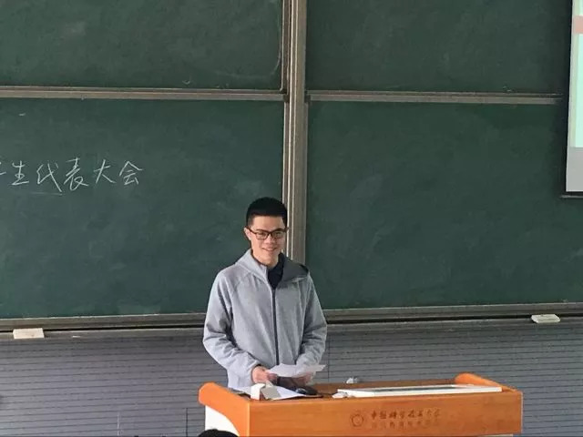
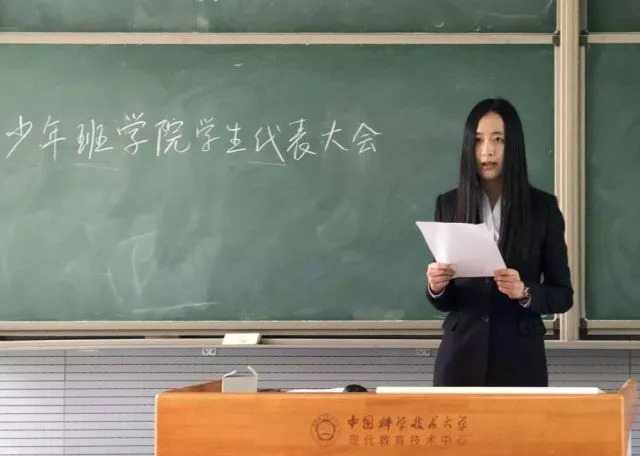
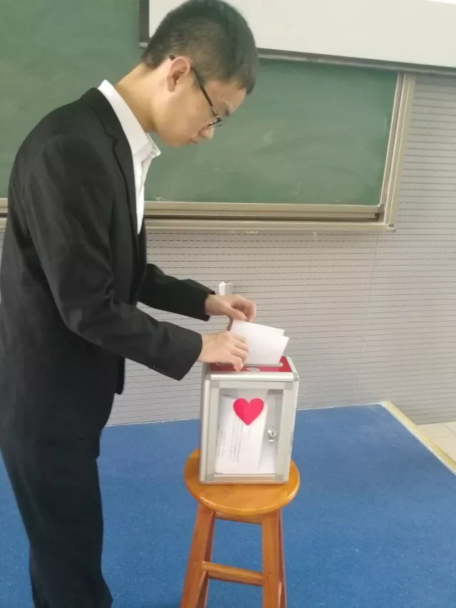
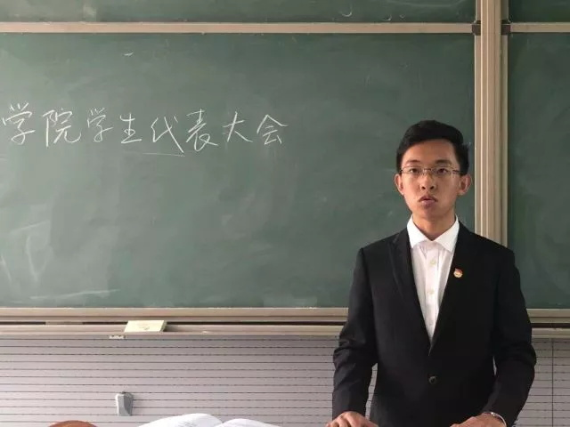
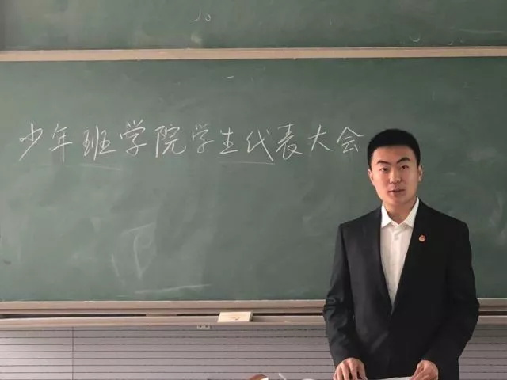
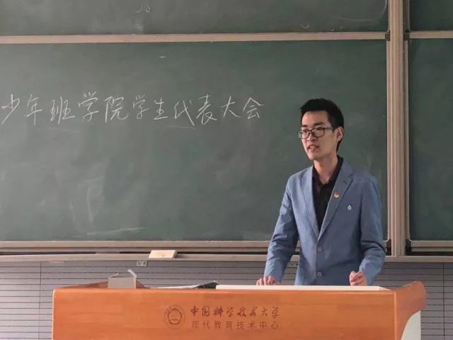
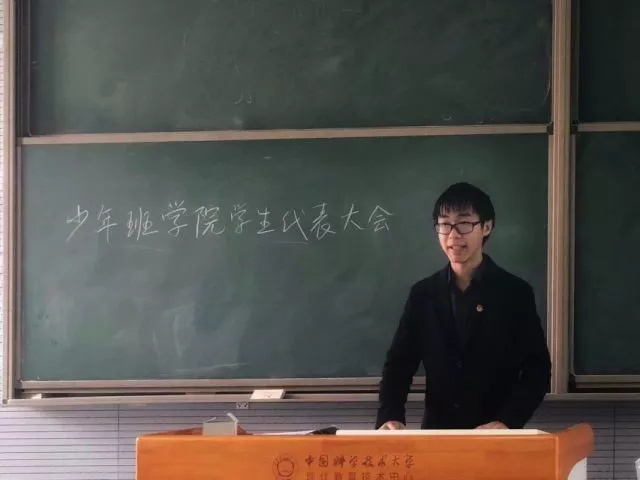
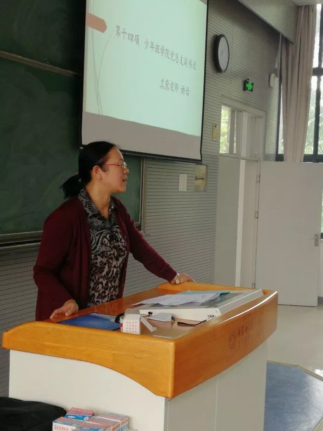
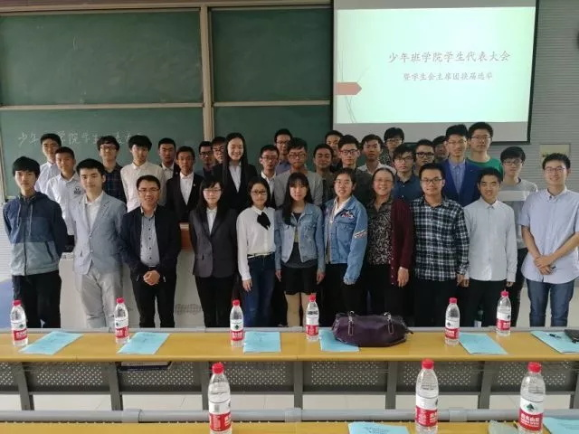

发布时间:2018-04-27 编辑：网络媒体部 宇燕、冷吟闲醉
少年班学院第十一届学生代表大会暨主席团换届选举大会顺利召开
2017年4月26日中午12：20，少年班学院第十一届学生代表大会暨主席团换届选举大会在2321教室成功召开。少年班学院党总支副书记兰荣老师、院分团委唐宁老师、校学生会主席田元景同学出席会议，各班学生代表参加会议，少年班学院吴鸿宇同学主持会议。
全体齐唱校歌《永恒的东风》之后，大会正式开始。校学生会代表田元景同学致辞，充分肯定少年班学生会过去一年的工作。

少年班学院学生会主席卜帆代表学院第十届学生会进行工作总结。回顾过去，报告从服务同学为学子发声、开展思想引领工作、培育校园文化精品、组织建设与制度完善、对外交流扩大影响力五个方面总结取得的成绩。考虑到未来的工作，报告还提出了加强思想建设、完善学生会组织架构建设、深入基层成为群众性组织、增强干事思考主动性与思维深度四项要求。

大会全体审议通过《少年班学院学生会章程（草案）》、《校级代表选举办法（草案）》、《少年班学院学生会主席团换届选举办法（草案）》、《少年班学院校级代表选举监票人、计票人名单（草案）》，并进行了校级学生代表的选举，最终从25位候选人中选出19位校级学生代表。


以主席团选举为议程，四位候选人进行竞选演说。主席候选人汪艺塍发表构思，领导一个有制度有效率的学生会、宣传少院文化、服务同学；常务副主席候选人李天宇提出思考，针对学生会桥梁和纽带的作用进行讨论；副主席候选人陈洋和赵良镛提出计划，分别针对宣传与文化展示工作和权益问题进行阐述。经过院级代表投票选举，四位候选人成功当选。




大会还对第十届少院学生会工作进行打分评议并讨论产生了23名校学生会委员会委员候选人。会上，宣读校级代表选举结果，讨论并表决我校第二十二届学生委员会委员候选人推荐名单。少年班学院党总支副书记兰荣老师发表讲话，她向当选的学生代表和主席团成员表示祝贺，肯定了在本次大会上感受到的感受到的务实求真作风，对学生会工作提出了指导意见和要求，希望大家再接再厉，在新的一年切实做好每一项工作。

最后，大会宣读第十一届少年班学院学生会主席团名单，全体唱团歌《光荣啊，中国共青团》并合影留念。
